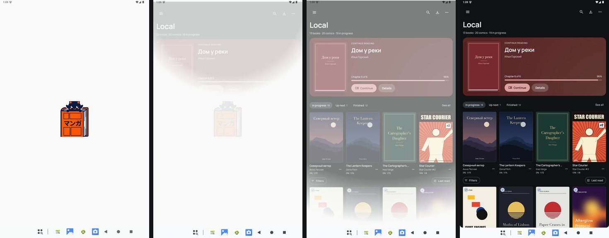
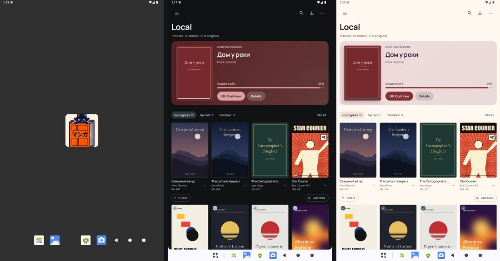

yabai · redesign plan 9.3 · board · 24 October 2026
Splash and the first second
You picked Do for the first second of a cold start. Today Android draws its own splash, white on a light device and grey on a dark one whatever theme the app is in, then cross-fades into the app. Below: the mark, the colour, how the splash hands over, and whether it waits for the books. Card 1 picks the mark (the rest draw A). Frames are drawn at real sizes (1 px = 1 dp, scaled to fit) over emulator screenshots. Picks save to this page.
0 of 4 picked
Picks are kept in this browser until the page's store answers.
What's there today (0.17.1, emulator, debug build)

A light device, the app in Graphite: a white splash, the mark fades, then a white wash dissolves into the dark library, through grey. About a second on the emulator.

A dark device: the same grey splash with the icon's cream tile whether the app is in Graphite or Paper, then whichever the theme is.
On white the cream tile disappears, and the mark looks sliced: the tile's mask cuts its top and the book's foot.
No splash is configured: no core-splashscreen, no windowSplashScreen*, and the manifest theme is Theme.AppCompat.DayNight.NoActionBar with no windowBackground. Android 12 and later build a splash from that: the device's light or dark window colour and the whole launcher icon, cream tile included.
The saved theme is already read at launch (loadStartupSettingsPreferences in UnifiedReaderApp), but only to set AppCompat's night mode, which neither the system splash nor MainActivity (a FragmentActivity) reads.
The window behind Compose is the same light or dark grey, so the hand-off, and any frame before Compose draws, shows it.
Sometimes the library's first frame is its grey placeholders (the source or the paged grid still loading); the review's cold start caught one.
1 · The mark: in the theme's accent, on its cream disc, or bare
pick A, B or C
A. The icon's one-colour layer (the themed-icon layer the launcher icon already ships) in the theme's accent. Each theme's splash is its own; nothing bright at night.
B. The launcher icon as on the home screen: the mark on its cream disc, the same in every theme. Keeps the orange; on dark themes it is a bright disc.
C. The mark in colour, no disc. The orange book holds; the navy cat sinks into the dark themes and nearly vanishes on Blueprint.
Shown over Graphite, Paper and Blueprint, a 300 dp square from the screen's centre.
Each is a splash-only drawable sized so nothing is cut: A and C fit Android's 192 dp icon circle (the mark 160 dp tall); B is a 160 dp disc with the mark 104 dp tall inside. The home-screen icon does not change.
Centred where Android puts it, with no name or caption under it (the wordmark was a Don't).
A's accent is the theme's primary: #B7C7D9 on Graphite, #405F6B on Paper, #9BE7FF on Blueprint; System Dynamic takes the wallpaper's.
2 · Every theme's own colour, from the first frame
core-splashscreen · windowBackground
The splash on a 412 dp phone in each theme, with mark A.
The splash is the saved theme's background, the colour the library's first frame paints (Graphite #101214, Paper #FFF8F0, …). The status bar and navigation icons follow it: dark on the light themes, light on the dark ones.
The window behind the app is that colour too, so the hand-off and any frame before Compose draws never flash white or grey. It also shows while the tablet rotates or a split-screen window resizes.
How: one splash style per theme, given to Android with SplashScreen.setSplashScreenTheme (Android 13+) whenever the theme changes; Android keeps it for the next cold start. The window colour is set from the saved theme as the activity starts (it is already read at launch) and again when the theme changes.
System Dynamic: the wallpaper's background and accent, light or dark as the device is.
Before Android 13 a splash can only follow the device: Paper's colours on a light device, Graphite's on a dark one. The tablet (Android 16) and the emulator (15) get every theme's own.
3 · The hand-off: Android's fade, or the mark steps back
pick A or B
A. Android's own exit: the mark fades, then the splash dissolves into the app. Over the same colour only the books appear. About a second, as today.
B. The mark shrinks to 0.92 and fades on effects while the library rises 8 dp and fades in on spatial. About 0.3 s.
Both start once the first screen has drawn; the splash before it is the same.
B takes the exit over (setOnExitAnimationListener), so it runs on the app's motion tokens, and when the system animator scale is 0 the splash just goes.
If the app reopens in a book, B's exit runs over the book's opening state (9.7) instead of the library.
4 · Wait for the books: the splash stays until the library has them
setKeepOnScreenCondition
The splash stays until the first screen has what it shows: the library's books (the source loaded, or the paged grid's first page in). A book or Settings releases it at once.
Never longer than 800 ms; after that the placeholders show, as today.
It loads nothing extra, only waits for what already loads. On the emulator's Local library the books were there on the first frame in most cold starts, so most starts would not wait at all.
To measure on the tablet when it is built: how often a cold start waits, and for how long.